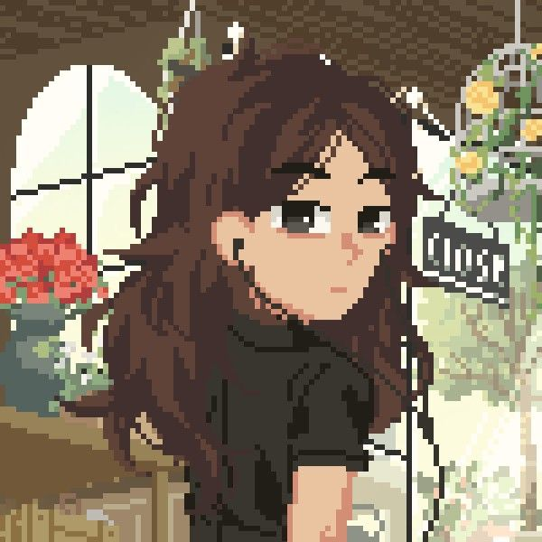

Sou formada em Informatica tecnica pela ETEC e foi la que tive meu
primeiro contato com a programação, com a codifição.
Foi lá também que tive conhecimento da existencias das linguagem de
programação e fiquei facinada com tudo que podiamos fazer com ela.
Esse portifolio tras curiosidades sobre o que estudei, o que venho
estudando e o que pretendo estudar.
Também tras curiosidades sobre meus hobbies e coisas que gosto de fazer
no meu tempo livre, quando não estou estudando.